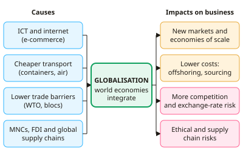

A-level Business Year 13 · Topic 10
The global business environment
This topic looks at the global business environment, and why so many firms now operate across borders.
We examine globalisation, free trade and protectionism, emerging economies and exchange rates.
Then we learn how to assess a country, both as a market to sell in and as a place to produce.
- 6 subtopics
- 299 questions
- Free: 10.1 notes and 10 questions
In this topic
- 10.1Globalisation: causes, growth and impact on businessFree below · 47 questions
- 10.2International trade: free trade, protectionism, WTO and trading blocsOpen in Full Marks · 74 questions
- 10.3Emerging economies and measures of economic developmentOpen in Full Marks · 29 questions
- 10.4Exchange rates and international tradeOpen in Full Marks · 72 questions
- 10.5Assessing a country as a marketOpen in Full Marks · 25 questions
- 10.6Assessing a country as a production locationOpen in Full Marks · 52 questions
10.1 · Free notes
Globalisation: causes, growth and impact on business

Key points
- Globalisation is the growing integration and interdependence of national economies through flows of goods, services, capital, labour, technology and information across borders.
- Trade liberalisation is a major cause. Falling tariffs and quotas under the WTO (and GATT before it), plus the growth of trading blocs, have made trade cheaper and easier.
- Technology has also driven globalisation. ICT, the internet and e-commerce let firms manage global operations and sell abroad cheaply. Containerisation and cheaper air freight cut transport costs.
- The growth of multinational corporations (MNCs) and foreign direct investment (FDI) spreads production worldwide. Firms build global supply chains, using offshoring (relocating processes overseas) and outsourcing (hiring an external provider).
- Emerging economies such as China, India and Vietnam have opened up. They offer low-cost labour and fast-growing markets, and they have become major producers and consumers in world trade.
- Deregulation of capital markets and rising incomes have encouraged cross-border investment. Converging consumer tastes have created global brands (e.g. Apple, Coca-Cola).
- Opportunities for business: access to new markets, economies of scale, lower costs (cheaper labour and materials), spreading of risk, and access to global finance and talent.
- Threats and costs: more intense competition, exchange rate risk, supply chain disruption (Covid-19, shipping crises), cultural and legal differences, and reputational risk from unethical suppliers (e.g. Rana Plaza, 2013).
- Firms choose between standardisation (one global product, lower unit costs) and adaptation (glocalisation: 'think global, act local'). Which is better depends on the product and on cultural differences between markets.
- Impacts differ by stakeholder. Consumers gain lower prices and more choice. UK manufacturing workers may face deindustrialisation and structural unemployment. Host countries may gain jobs and technology, but workers may face poor conditions.
- Recent trends suggest slowbalisation: trade tensions, tariffs, Brexit and the pandemic have prompted reshoring, nearshoring and 'friend-shoring'. Trade as a share of GDP has plateaued since 2008.
- Exam tip: evaluate by firm size, sector and product type, the scale of the impact, the time frame, and whether the firm is an importer, an exporter or an MNC.
In more detail
- Containerisation: standard shipping containers, introduced in the 1950s and 1960s, cut the cost of moving goods so much that global supply chains became practical.
- A global product: a smartphone may be designed in the USA, use parts from Japan, South Korea and Taiwan, and be assembled in China or India.
- Slowbalisation example: US tariffs on Chinese goods from 2018 led some firms to move production to countries such as Vietnam and Mexico.
- Winners and losers: consumers gain cheaper goods, while workers in industries exposed to import competition may lose their jobs.
Practice
Globalisation: causes, growth and impact on business: 10 questions
Pick an answer to check it, or open the answer for the explanation.
1. Which of the following is a cause of globalisation?
- Reduced foreign direct investment
- Rising import tariffs worldwide
- Containerisation lowering the cost of shipping goods
- A fall in internet use
Show answer
C: Containerisation lowering the cost of shipping goods. Containerisation and cheaper transport reduce the cost of trading across borders, so they are a key cause of globalisation. The other options would reduce integration.
2. A UK bank moves its customer call centre to its own subsidiary in India. This is best described as:
- Reshoring
- Protectionism
- Offshoring
- Import substitution
Show answer
C: Offshoring. Offshoring is relocating business processes to another country, here within the firm's own subsidiary. Reshoring is the reverse, and protectionism limits trade.
3. Which is an example of inward foreign direct investment into the UK?
- A UK shopper buying imported French cheese
- The UK government issuing bonds to UK pension funds
- Nissan expanding its Sunderland car plant
- A UK firm exporting whisky to Japan
Show answer
C: Nissan expanding its Sunderland car plant. FDI is a firm buying or building productive assets in another country. Nissan, a Japanese MNC, investing in a UK plant is inward FDI. The other options are trade or domestic finance.
4. Unit cost is £20, of which labour is £8. After moving production overseas, labour cost falls 60%, other costs are unchanged and shipping adds £1.20 per unit. New unit cost?
- £15.20
- £16.40
- £14.40
- £12.80
Show answer
B: £16.40. New labour cost is £8 × 0.4 = £3.20. Other costs are £12, and shipping is £1.20. Total = £3.20 + £12 + £1.20 = £16.40. Ignoring shipping gives £15.20.
5. A UK firm invoices a eurozone customer €230,000. The pound rises from €1.15 to €1.25. What happens to the sterling value?
- Falls from £200,000 to £184,000
- Rises from £200,000 to £287,500
- Stays at £200,000
- Falls from £287,500 to £200,000
Show answer
A: Falls from £200,000 to £184,000. €230,000 ÷ 1.15 = £200,000. At €1.25, €230,000 ÷ 1.25 = £184,000. A stronger pound means each euro buys fewer pounds, so UK exporters earn less.
6. A UK clothing retailer's Bangladeshi supplier factory collapses, killing workers. The main globalisation risk exposed is:
- Lower economies of scale
- Higher tariffs on UK exports
- Reduced access to new markets
- Reputational damage from weak supply chain ethics
Show answer
D: Reputational damage from weak supply chain ethics. Long global supply chains reduce a firm's control over suppliers. Unsafe or unethical conditions can cause serious reputational damage and consumer boycotts, as with Rana Plaza (2013).
7. McDonald's offers menu items such as the McAloo Tikki in India but not elsewhere. This best illustrates:
- Glocalisation: adapting products to local tastes
- Full global standardisation
- Vertical integration
- Import substitution
Show answer
A: Glocalisation: adapting products to local tastes. Glocalisation ('think global, act local') keeps a global brand but adapts the product to local culture and tastes. Standardisation would sell the identical menu everywhere.
8. A firm closes its Asian factory and reopens production in the UK to cut supply chain risk. This is best described as:
- Outsourcing to a third party
- Reshoring, consistent with slowbalisation
- Franchising
- Offshoring
Show answer
B: Reshoring, consistent with slowbalisation. Reshoring means bringing production back to the home country. A growing trend of reshoring and nearshoring is associated with slowbalisation.
9. Trade (exports + imports) as a % of GDP was 40% in 2000, 58% in 2012 and 52% in 2022. Which conclusion is best supported?
- Trade grew every year to 2022
- Trade intensity rose overall but has fallen since 2012
- Trade is now below its 2000 level
- Globalisation has fallen continuously since 2000
Show answer
B: Trade intensity rose overall but has fallen since 2012. The ratio rose from 40% to 58%, then fell to 52%. It remains above 2000 but is below its 2012 peak, which is consistent with slowbalisation.
10. A firm sells an identical smartphone worldwide. The main cost benefit is likely to be:
- Avoiding all tariffs
- Lower exchange rate risk
- Economies of scale in production and marketing
- Greater local product fit
Show answer
C: Economies of scale in production and marketing. Standardising output lets the firm produce and promote a single product on a large scale, lowering unit costs. It may reduce local fit, and it does not remove tariffs or currency risk.
Keep going in Full Marks
Full Marks has 47 questions on Globalisation: causes, growth and impact on business (37 more than here), set out in practice levels. You also get notes and 3D models for all 6 subtopics of The global business environment, plus games, timed exams and past papers.